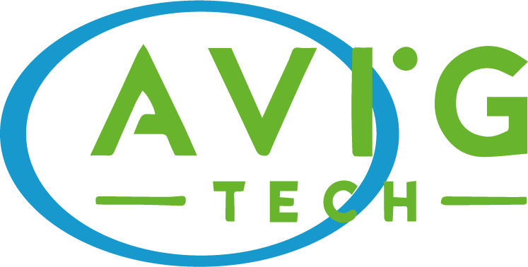

üìò Curso ROS Noetic SMR
Bienvenido a la documentación oficial del curso ROS Noetic SMR de AVIG Tech.
Aquí encontrarás clases, recursos y ejemplos prácticos para tu aprendizaje.
Esta serie de códigos ha sido compilado y desarrollado por AvigTech.

Contenido
ROS Noetic
Prerequisitos
Mensajes, Servicios y Acciones
Conexión con Dispositivos
Visualización de datos